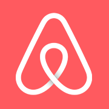

Logos and favicons belong to their owners and are shown here for reference. This is not an endorsement and it is not a license to use the mark.
Airbnb is the stay marketplace at airbnb.com. The Bélo mark in the tab is the icon trip bookmarks use, saved from the host response.
Checked 12 November 2026 against airbnb.com. HTML came from https://www.airbnb.com/ (HTTP 200). Icon link tags: apple-touch-icon → https://a0.muscache.com/airbnb/static/icons/apple-touch-icon-76x76-3b313d93b1b5823293524b9764352ac9.png; apple-touch-icon 76x76 → https://a0.muscache.com/airbnb/static/icons/apple-touch-icon-76x76-3b313d93b1b5823293524b9764352ac9.png; apple-touch-icon 120x120 → https://a0.muscache.com/airbnb/static/icons/apple-touch-icon-120x120-52b1adb4fe3a8f825fc4b143de12ea4b.png; apple-touch-icon 152x152 → https://a0.muscache.com/airbnb/static/icons/apple-touch-icon-152x152-7b7c6444b63d8b6ebad9dae7169e5ed6.png; apple-touch-icon 180x180 → https://a0.muscache.com/airbnb/static/icons/apple-touch-icon-180x180-bcbe0e3960cd084eb8eaf1353cf3c730.png; icon 192x192 → https://a0.muscache.com/im/pictures/AirbnbPlatformAssets/AirbnbPlatformAssets-Favicons/original/d1fcc0b3-865f-485a-b28b-43ca0bf7c891.png?im_w=240. 2 more are in the table below.
The favicon.ico URL is https://www.airbnb.com/favicon.ico. The saved file favicon.ico is 4286 bytes. Directory sizes: 32×32.
The apple-touch-icon URL is https://a0.muscache.com/airbnb/static/icons/apple-touch-icon-180x180-bcbe0e3960cd084eb8eaf1353cf3c730.png, measured at 180×180 png.
Brand colour #ffffff comes from the theme-color meta tag.
Largest measured bitmap: png-192x192-08.png at 192×192 (png, 7384 bytes) from https://a0.muscache.com/airbnb/static/icons/android-icon-192x192-c0465f9f0380893768972a31a614b670.png.
Saved facts
favicon.ico URL: https://www.airbnb.com/favicon.ico
apple-touch-icon URL: https://a0.muscache.com/airbnb/static/icons/apple-touch-icon-180x180-bcbe0e3960cd084eb8eaf1353cf3c730.png

Brand colour #ffffff — theme-color meta tag.
Preview
The preview uses the static snapshot png-180x180-01.png, measured at 180×180. The boxes scale that same saved file in the browser. They are not extra downloads and they do not call the favicon API.

Download
Every button is a file saved from the live response on the check date. Nothing here was resized on a server, and the buttons point at those static files.
png-180x180-01.png png-152x152-02.png png-120x120-03.png png-76x76-04.png png-58x58-05.png favicon.ico svg-07.svg png-192x192-08.png


Files and measured dimensions


Link tags found

Manifest icons as declared
These sizes are the strings in the manifest. They are not a measurement unless the same URL was downloaded and appears in the file table.
How this compares with a normal favicon set
A site you publish yourself usually needs a different set from the one Airbnb happens to ship: 16×16, 32×32 and 48×48 in one favicon.ico, a 180×180 apple-touch icon, and 192×192 plus 512×512 manifest PNGs. That chart, including 96×96, maskable icons, Windows tiles and SVG, is the favicon dimensions guide. Use Airbnb ’s files as a reference, then build your own with the PNG to favicon converter.
Related site icons
- Delta Air Lines favicon (delta.com)
- Expedia favicon (expedia.com)
- Hyatt favicon (hyatt.com)
- KAYAK favicon (kayak.com)
- Lyft favicon (lyft.com)
- Google Maps favicon (maps.google.com)
FAQ
What is the Airbnb favicon.ico URL?
Yes. favicon.ico (4286 bytes) from https://www.airbnb.com/favicon.ico. Directory sizes: 32×32.
What are the Airbnb favicon dimensions?
The pixel sizes below were read from the files, not from a generic size chart. png-180x180-01.png: 180×180 (PNG IHDR) png-152x152-02.png: 152×152 (PNG IHDR) png-120x120-03.png: 120×120 (PNG IHDR) png-76x76-04.png: 76×76 (PNG IHDR) png-58x58-05.png: 58×58 (PNG IHDR) favicon.ico: 32×32 (ICO directory) svg-07.svg: 150×150 (SVG viewBox user units, not a pixel bitmap) png-192x192-08.png: 192×192 (PNG IHDR)
What apple-touch-icon does Airbnb publish?
Yes. https://a0.muscache.com/airbnb/static/icons/apple-touch-icon-180x180-bcbe0e3960cd084eb8eaf1353cf3c730.png saved as png-180x180-01.png.
What brand colour does the Airbnb favicon page record?
#ffffff, from the theme-color meta tag.
Which icon files were saved for Airbnb?
On 12 November 2026 these image files were downloaded for airbnb.com: png-180x180-01.png (png, 4104 bytes, 180×180); png-152x152-02.png (png, 3526 bytes, 152×152); png-120x120-03.png (png, 2753 bytes, 120×120); png-76x76-04.png (png, 1692 bytes, 76×76); png-58x58-05.png (png, 2894 bytes, 58×58); favicon.ico (ico, 4286 bytes, 32×32); svg-07.svg (svg, 2177 bytes, 150×150); png-192x192-08.png (png, 7384 bytes, 192×192).
May I use the Airbnb icon on my own site?
No. Logos and favicons belong to their owners and are shown here for reference so you can see the real format and dimensions. For your own site, make a file with the PNG to favicon converter or download a site you control.
Look up another domain in the favicon downloader, fetch several at once with the bulk favicon downloader, or go back to the site favicon index.